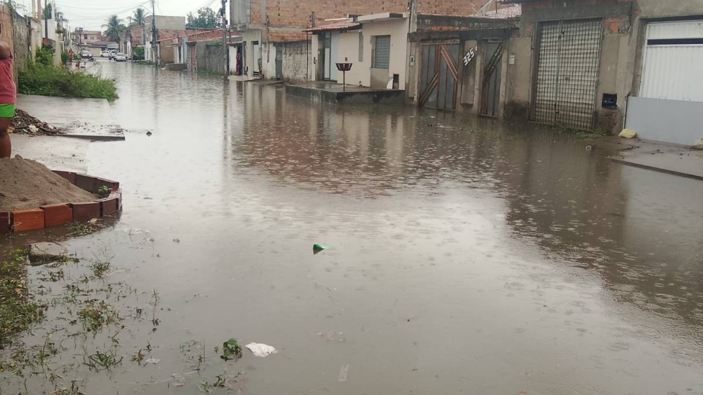
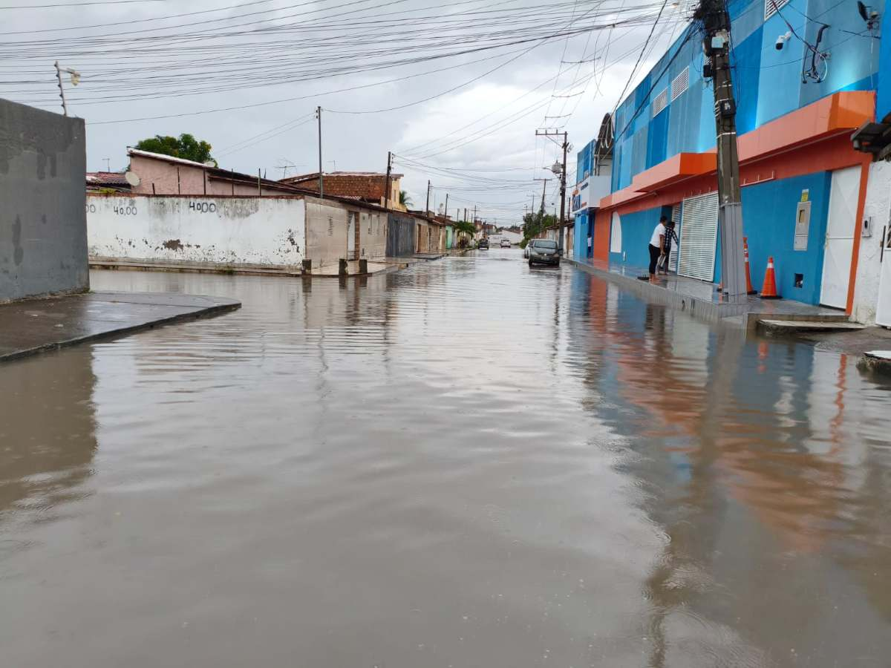

Repórter Davi
Notícias de Feira de Santana e Região
Repórter Davi
Notícias de Feira de Santana e Região
Moradores relatam transtornos recorrentes e cobram implantação de rede de drenagem no bairro.
Publicado em 26/02/2026
Rua alagada na região do conjunto Panorama - Reprodução
Logo após as fortes chuvas registradas na tarde desta quinta-feira (26), em Feira de Santana, moradores do conjunto Panorama II, localizado no bairro Tomba, entraram em contato com o Acorda Cidade para relatar pontos de alagamento em diversas ruas da localidade.
De acordo com os relatos, a situação foi registrada na Rua Lampião, além das ruas Afonso Célso, Conselheiro Pena e Silvina Marquês de Oliveira. As imagens enviadas mostram vias completamente tomadas pela água, dificultando a passagem de pedestres e veículos.
Segundo um morador, o problema ocorre sempre que chove. “Toda vez é a mesma coisa. A rua fica toda inundada. Só tem rede de esgoto sanitário, não tem rede de drenagem para água da chuva”, afirmou em contato com o Acorda Cidade.
Uma moradora da Rua Adriano Araújo também relatou o transtorno. “Toda vez que chove essa rua alaga e o prefeito não faz nada pelos moradores”, disse.

R. Adriano Araújo – Foto: Enviada pelo Whatsapp
Outro relato, vindo da Rua E (L Barreto) destaca que a água se espalhou por ruas adjacentes e atingiu áreas próximas a um grande colégio da região.

R. E (L Barreto) – Foto: Enviada pelo Whatsapp